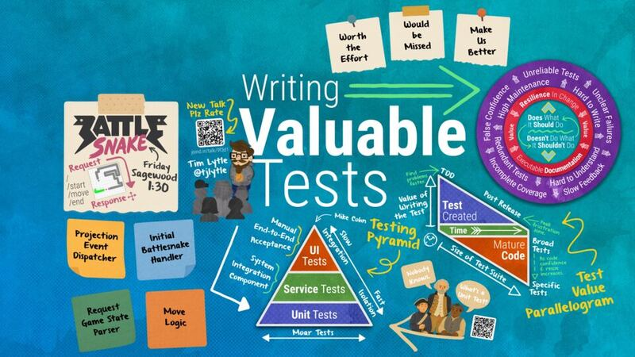

Is This Test Worth It? Evaluating the Real Value of Testing
Unit, integration, contract, or end-to-end: the question that matters is what a test actually buys you.
Full abstract
The differences between unit tests, integration tests, contract tests, end-to-end tests, and behavior tests-and which type is best to use-are often debated. Principles like "don't mock what you don't own" or "test behavior, not implementation" are often cited in those conversations. But there's one key question we should always ask when writing tests: is this a valuable test?
So let's put those other concepts aside and ask a simple question as we look at some real-world examples: "What is the value of this test?" Answering that can lead to more nuanced questions. Does this test continue to deliver value over time? How much value comes from the act of writing this test? Are there ways to increase the immediate value as well as the long term value?
Join me as we rethink testing-not in terms of types and categories, but in terms of the practical, meaningful value that testing brings to our codebases and our teams.